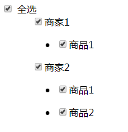

1、通过对数据的简单操作可实现更深层次的全选操作
2、vue.$set(object, key, value)给对象添加属性可以更新视图
3、通过es6的every判断数组中是否每个元素都满足条件，都满足返回true，有一个不满足则返回false
<div class="box">
<input type="checkbox" v-model="checkedAll" @change="checkAll"> 全选
</div>
<div class="list" style="margin-left:50px;" v-for="(val,k) in data" :key="k">
<div class="box">
<input type="checkbox" v-model="val.checked" @change="_checkAll(val)">
{{val.seller}}
</div>
<ul v-for="(item,index) in val.goodsList" :key="index">
<li>
<input type="checkbox" v-model="item.checked" @change="handleCheck(item,index)">
{{item.name}}
</li>
</ul>
</div> var app = new Vue({
el: "#app",
data: {
checkedAll: false, //控制是否全选
data: [{
seller: "商家1",
goodsList: [{
name: '商品1'
}]
}, {
seller: "商家2",
goodsList: [{
name: '商品2'
}, {
name: '商品3'
}]
}] //数据
},
mounted() {
this.data.forEach(item => {
this.$set(item, "checked", false) //Vue 解决不能检测到对象属性的添加或删除
// item.checked = false; //如果为真实数据直接设置的对象改变值不会更新视图
if (item.goodsList) {
item.goodsList.forEach((citem) => {
this.$set(citem, "checked", false)
// citem.checked = false;
})
}
});
},
methods: {
//全选
checkAll() {
this.data.forEach(item => {
item.checked = this.checkedAll;
if (item.goodsList) {
item.goodsList.forEach(citem => {
citem.checked = this.checkedAll;
})
}
})
},
//商家全选
_checkAll(val, k) {
val.goodsList.forEach(item => {
item.checked = val.checked;
});
if (this.data.every(item => item.checked)) {
this.checkedAll = true;
} else {
this.checkedAll = false;
}
},
//商品选择框
handleCheck(item, index) {
var check = []; //保存中间层是否被选中的布尔值
this.data.forEach((items, index) => {
if (items.goodsList) {
var bool = items.goodsList.every(citem => citem.checked);
if (bool) {
items.checked = true;
} else {
items.checked = false;
}
check.push(bool);
}
})
if (check.indexOf(false) == -1) {
this.checkedAll = true;
} else {
this.checkedAll = false;
}
},
}
})